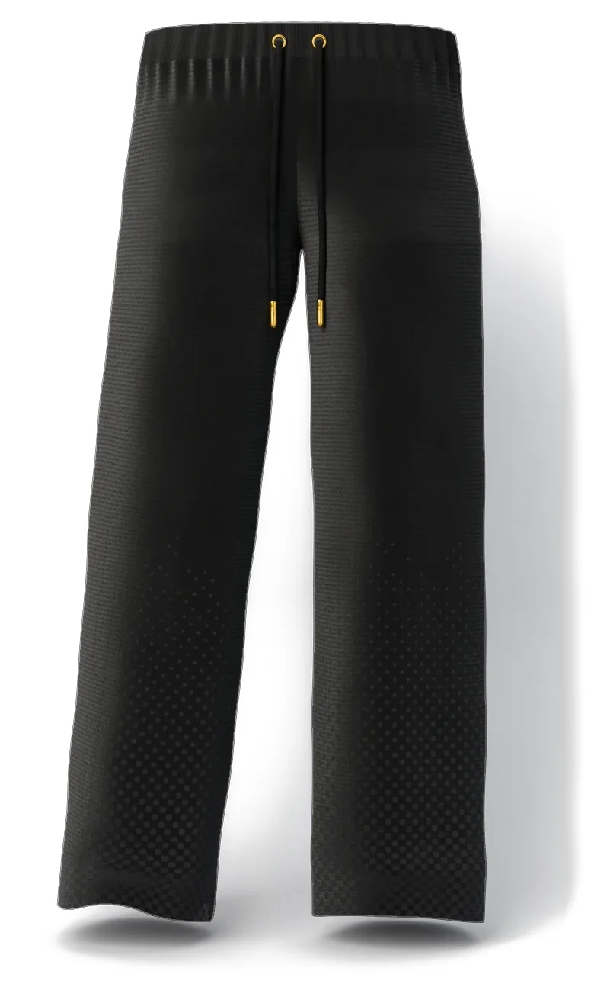
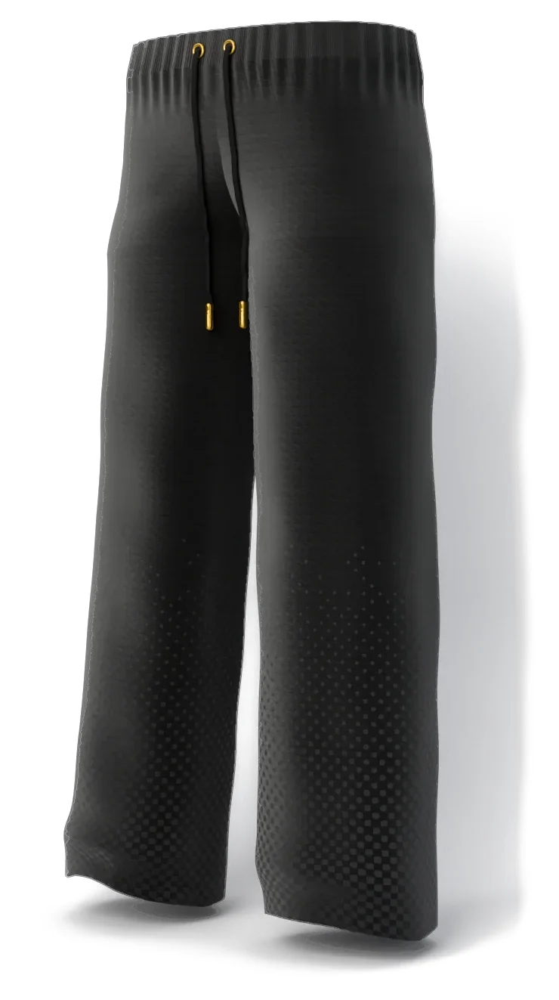
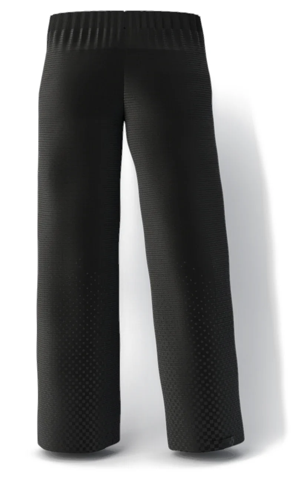
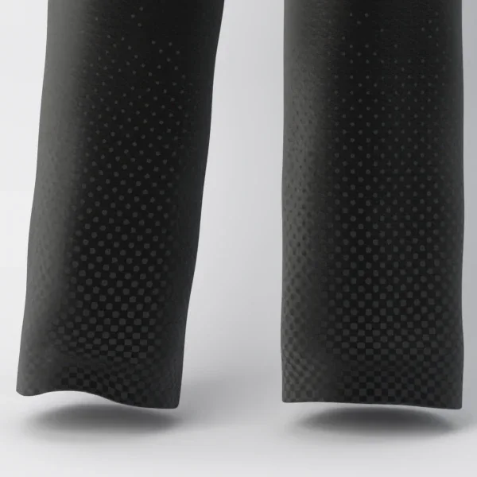
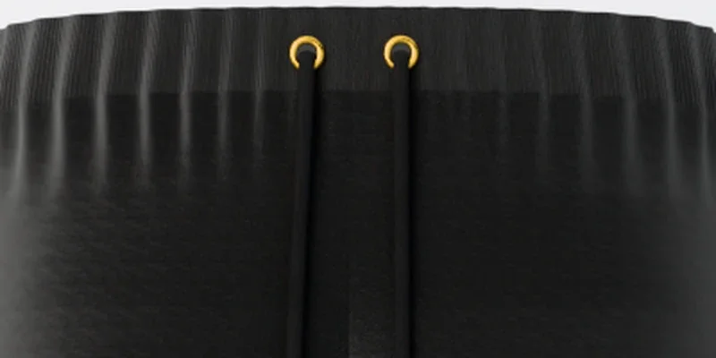
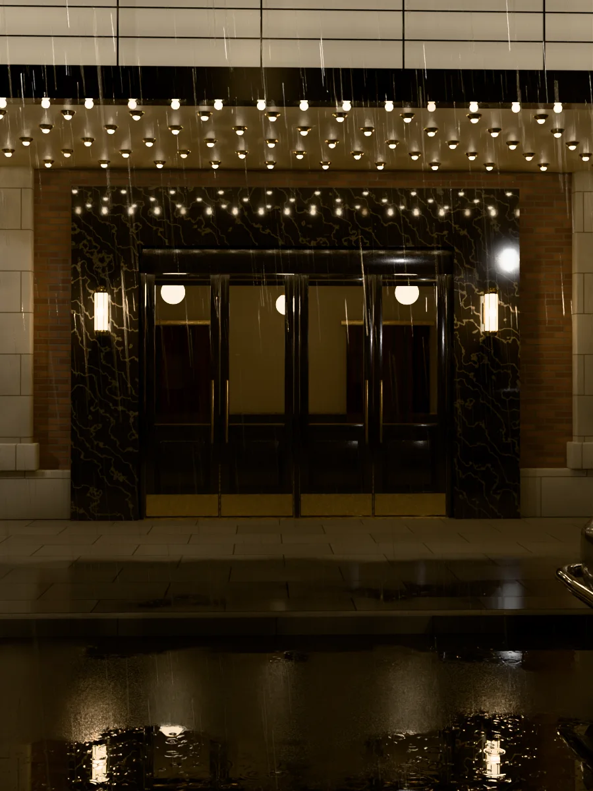

STAND-IN · img/carbonado-trousers/front/master.* (departments/apparel/new-pieces-2026-11/build/quiet-black-trousers/site/quiet_black_trousers_front_16k.png; 16K, 8640 × 15360)
STAND-IN · img/carbonado-trousers/three-quarter/master.* (three-quarter view, 8K; 8K, 4320 × 7680)
STAND-IN · img/carbonado-trousers/back/master.* (back view, 8K; 8K, 4320 × 7680)
STAND-IN · img/carbonado-trousers/detail-fade/master.* (the fade at the knee, 8K close-up; 8K, 7680 × 4320)
STAND-IN · img/carbonado-trousers/detail-waistband/master.* (the waistband, 8K close-up; 8K, 7680 × 4320)Chapter I · Knitwear
Carbonado
Knit trousers
The quiet that follows the hoodie down. A relaxed straight leg in the house knit, its dots rising from the hem and fading at the knee, the waist tied with a black cord tipped in brass.
- KNIT
- 28-GAUGE DOUBLE JACQUARD
- YARN
- MATTE AND MERCERISED BLACK COTTON
- LEG
- RELAXED, STRAIGHT
- COLOURWAY
- BLACK / BLACK
- SIZE
- S · M · L · XL · XXL
Price on request
ReserveMade to order. Delivery date confirmed by email.
Delivered in the house box.
Details
- Made to order
- Made to order. We email your delivery date once production is confirmed. Cancel for a full refund any time before production starts.
- Returns
- Size exchanges within 14 days of delivery, unworn and with tags. Returns
- Care
- Wash cold, inside out, on a gentle cycle. Dry flat. No tumble dryer, no bleach. Care
- Size
- The measurements

STAND-IN · img/carbonado-trousers/world/master.* (C2: the last frame, the world plate (the lobby, far end); 8K, 5760 × 7680)Where it is going · C2
The lobby, far end
The rope, unhooked from its post.
On the screen in the film, the picture is tomorrow: each piece in the place it is going, with one place kept for someone.
The maker’s notes
Carbonado, the Quiet Black trousers
- They begin as four panels, each 376 stitches by 1,611, in the hoodie’s knit.
- Two black cottons are used: a matte one for the ground, a mercerised one for the dots.
- The dots sit on a 12 mm screen at 45 degrees, meeting at the hem and gone by the knee.
- The leg is straight and relaxed, 63 cm round at the hem.
- They close on a 4 cm rib waistband: a black cord, two brass eyelets, brass tips.
Inside them: the hem, turned up 2.5 cm. No cuff.
Read the poem